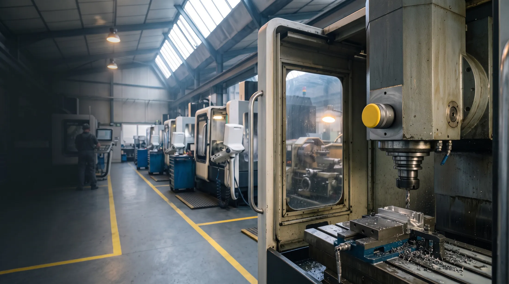
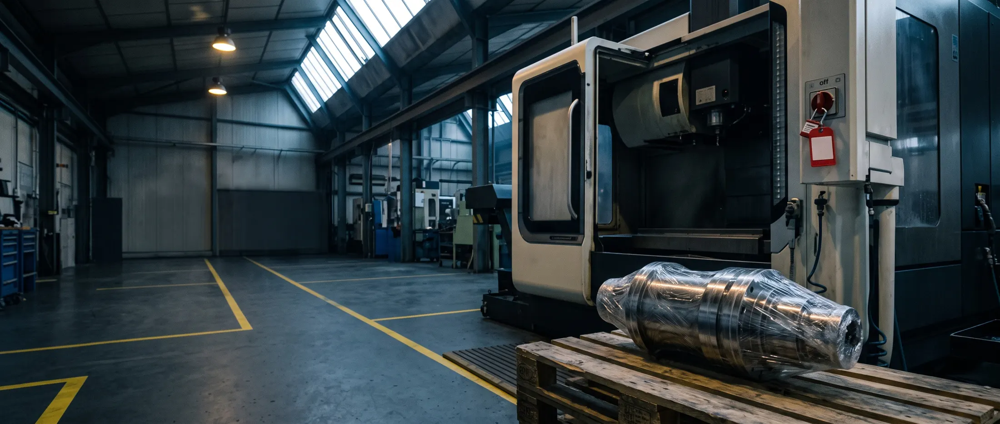
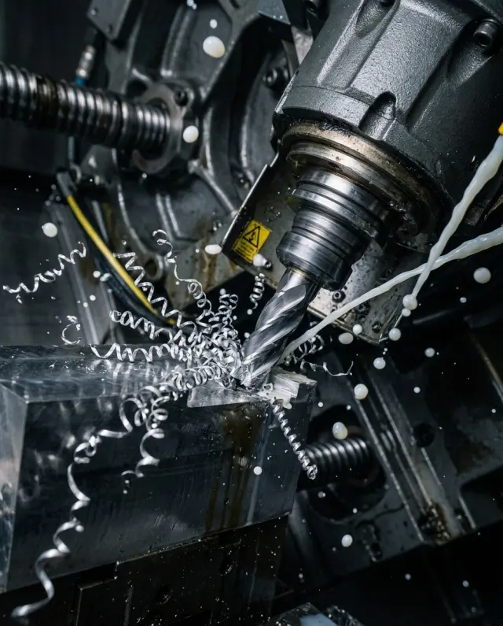
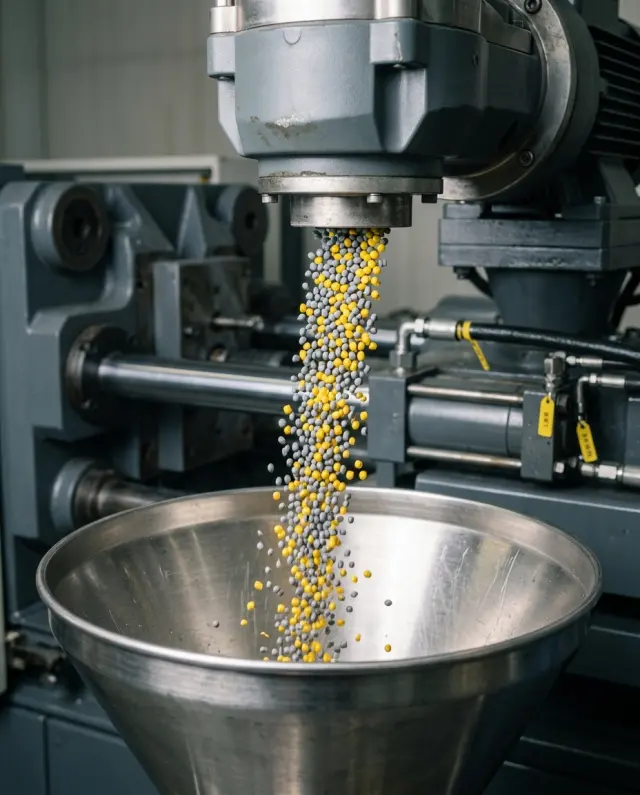
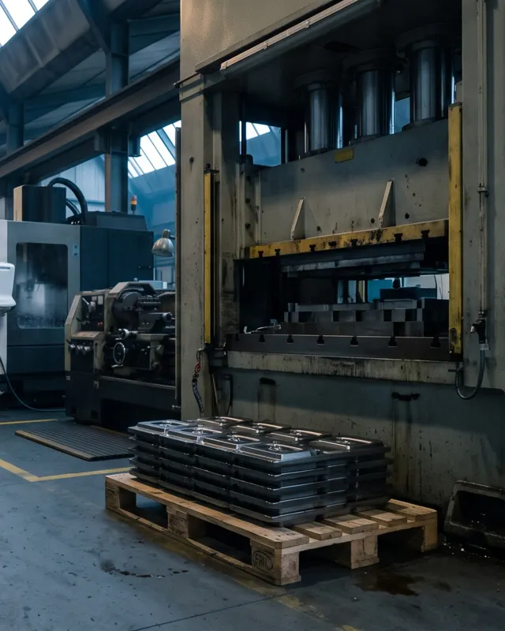
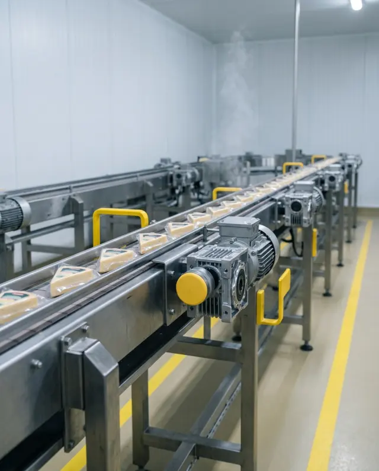
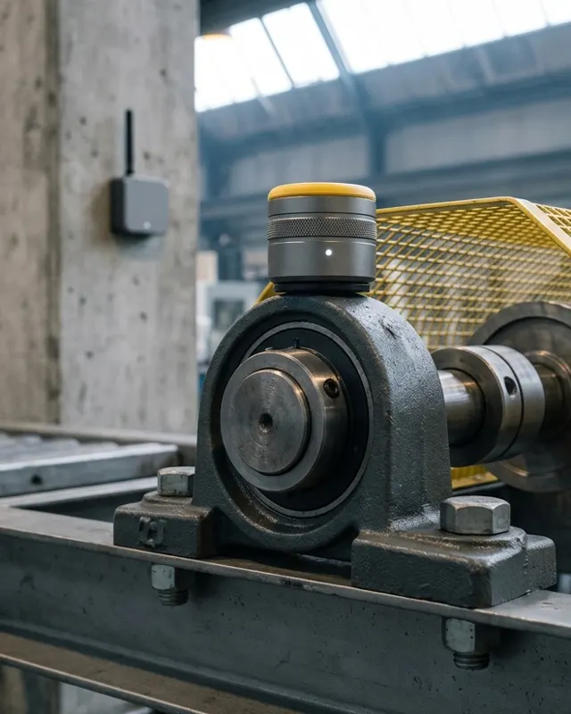
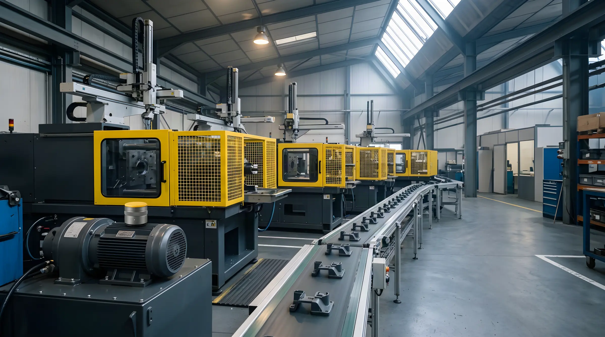
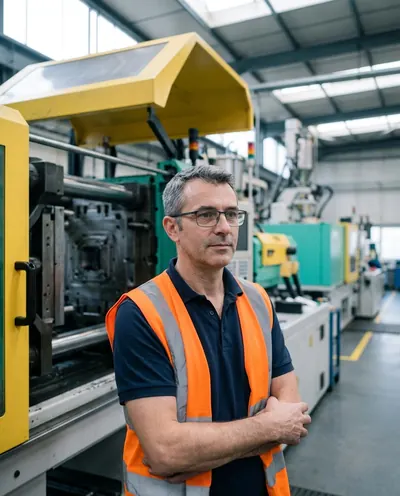

Jour 1 · Pose
Une journée, machines en marche
Un technicien Vigie fixe chaque capteur au droit d'un roulement, sur le palier ou le flasque, par aimant ou par colle. Jamais sur une pièce qui tourne. La passerelle 4G se branche sur une prise.

Pour les PMI de 50 à 300 salariés. Des capteurs posés en une journée sur vos machines critiques, un SMS 2 à 6 semaines avant la casse. Vous choisissez le jour de l'intervention.
Pilote de 90 jours sur 3 machines, remboursé si aucune alerte utile. Sans arrêt de production, sans toucher à votre réseau.
Coût moyen d'une casse de broche non prévue chez nos clients usineurs, relevé sur 38 incidents en 2025.

Le pire, c'est l'appel du client.
Depuis que vous lisez ce bloc, une ligne à l'arrêt vous aurait déjà coûté 0,00 €.
Vibration du roulement avant d'une broche, relevée chaque jour pendant 8 semaines. Défilez.Vitesse vibratoire efficace du roulement avant d'une broche de centre d'usinage, relevée chaque jour pendant huit semaines. Défilez : c'est ce que Vigie mesure, et ce que l'oreille n'entend pas encore.
Jours 2 à 15 · apprentissageVigie apprend la vibration normale de cette broche, à chaque vitesse : 2,1 mm/s.
S-5 · rien ne s'entendLa tendance bouge à peine, mais un pic sort dans le spectre : défaut de bague extérieure.
BPFO ≈ 4,1 × f rotationS-3 · 4,6 mm/s · SMS envoyé« CN-04, roulement avant de broche. Intervention conseillée sous 3 semaines. »
S-2 · vendredi, 14 hBroche d'échange montée au changement d'équipe : 16 h d'arrêt planifié au lieu de 3 jours subis. Retour à 2,0 mm/s.
Sans Vigie · S-0 · 11 mm/sLa broche serre un mardi à 10 h 40.
Jours 2 à 15 · apprentissageVigie apprend la vibration normale de cette broche, à chaque vitesse : 2,1 mm/s.
S-5 · rien ne s'entendLa tendance bouge à peine, mais un pic sort dans le spectre.
S-3 · 4,6 mm/s · SMS envoyé« CN-04, roulement avant de broche. Intervention conseillée sous 3 semaines. »
S-2 · vendredi, 14 hBroche d'échange montée au changement d'équipe : 16 h d'arrêt planifié au lieu de 3 jours. Retour à 2,0 mm/s.
Sans Vigie · S-0 · 11 mm/sLa broche serre un mardi à 10 h 40. Trois jours d'arrêt.
Son reconstitué, au rythme du défaut réel.Son reconstitué : le rythme des chocs suit la fréquence de défaut réelle.
Le capteur se pose au droit du roulement, sur le palier ou le flasque, là où le défaut naît. Il tient à l'huile de coupe, au lavage haute pression et aux chocs d'un atelier qui travaille.
Faites-le tourner. Le réglet est en millimètres.
Chaque machine a son état. Chaque alerte dit quelle pièce changer et avant quand. Votre équipe n'a pas besoin de lire un spectre.
Essayez : cliquez sur une machine, ou simulez une alerte.
Roulement avant de broche
CN-04 · centre d'usinage
Vibration
5,1 mm/s
Température
58 °C
Tendance 30 j
+142 %
Défaut de bague extérieure confirmé par Julien, analyste vibratoire. Intervention conseillée sous 3 semaines. Pièce : roulement à contact oblique 7014.
Usinage, plasturgie, agroalimentaire. Peu importe l'âge ou la marque : si ça tourne, ça vibre, et ça prévient.

Broches de centres d'usinage
Roulements, balourd, outil mal équilibré
Roulements, balourd, outil mal équilibré

Presses à injecter
Groupe hydraulique, vis, motoréducteur
Groupe hydraulique, vis, motoréducteur

Presses hydrauliques et pompes
Cavitation, roulements de pompe, fuite interne
Cavitation, roulements de pompe, fuite interne

Convoyeurs et motoréducteurs
Engrenages, désalignement, paliers
Engrenages, désalignement, paliers

Paliers, ventilateurs, compresseurs
Balourd, paliers, courroies
Balourd, paliers, courroies
Quatre réglages, vos chiffres. Le calcul se fait ici, rien n'est enregistré.
Économie estimée chaque année
38 220 €
Un seul arrêt évité vaut 9 100 € : l'abonnement est remboursé dès le 1er arrêt évité.
Hypothèse : 70 % des arrêts imprévus évités, moyenne relevée sur nos sites clients en 2025. Pièces express et pénalités non comptées. Abonnement : 390 € HT par mois pour 10 capteurs, puis 32 € par capteur.
Vérifier ce calcul avec un analyste
Étude de cas · plasturgie
Bon de travail · GMAO
BT-2024-0417
140 salariés · 22 presses à injecter · 3 équipes · client Vigie depuis mars 2024

« La première alerte est tombée à la sixième semaine : un roulement de pompe sur la presse 7. On l'a changé un vendredi, en deux heures. Avant, on l'aurait découvert le lundi matin, presse arrêtée. »
Sébastien accepte d'en parler : demandez son numéro pendant le diagnostic.
Arrêts imprévus
Heures d'arrêt imprévu
Coût des arrêts
Barres : part restante par rapport à l'année d'avant. 14 alertes envoyées, 13 confirmées à l'ouverture de la machine. Coût horaire retenu : 650 €.
Si en 90 jours Vigie ne vous a rien appris d'utile, on reprend les capteurs et on vous rembourse.
1 490 €HT, une fois
Remboursé si aucune alerte utile
Le montant est déduit de votre abonnement si vous continuez.
Démarrer par un diagnosticà partir de390 €HT / mois
10 capteurs inclus, puis 32 € HT par capteur et par mois. Engagement 12 mois, ensuite résiliable avec 3 mois de préavis.
Ce qu'on appelle une alerte utile : un défaut signalé par Vigie et confirmé quand votre équipe ouvre la machine (roulement marqué, désalignement mesuré, balourd, cavitation). Une alerte sans défaut constaté ne compte pas.
Une autre question ? Posez-la pendant le diagnostic, on y répond avec vos machines sous les yeux.
Un analyste vibratoire vous appelle au créneau choisi. On liste vos machines critiques, on chiffre votre coût d'arrêt réel, et on vous dit franchement si Vigie vaut le coup chez vous.
Rappel au créneau choisi. Pas de démo commerciale.
Pressé ? Appelez Julien.Julien Ferrand, analyste vibratoire certifié ISO 18436-2 cat. II, 12 ans de maintenance en usinage.04 76 52 18 41
Nos capteurs sont conçus, assemblés et suivis à Grenoble, par 8 analystes vibratoires certifiés ISO 18436-2.